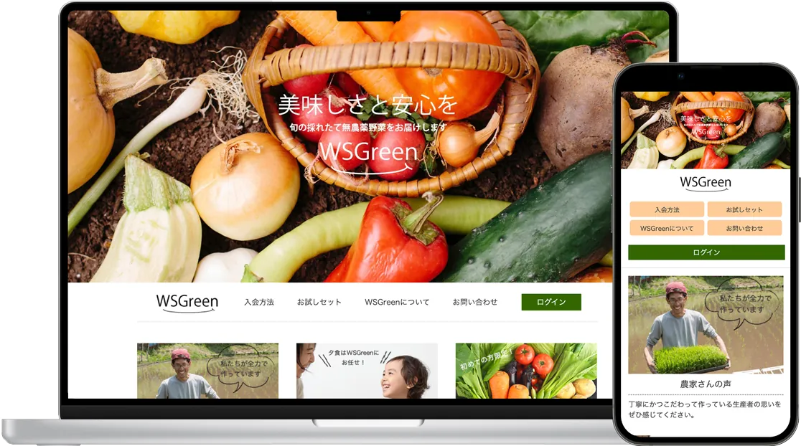
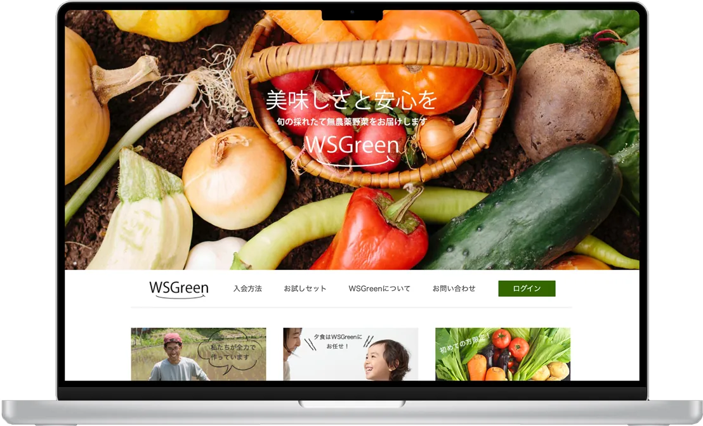
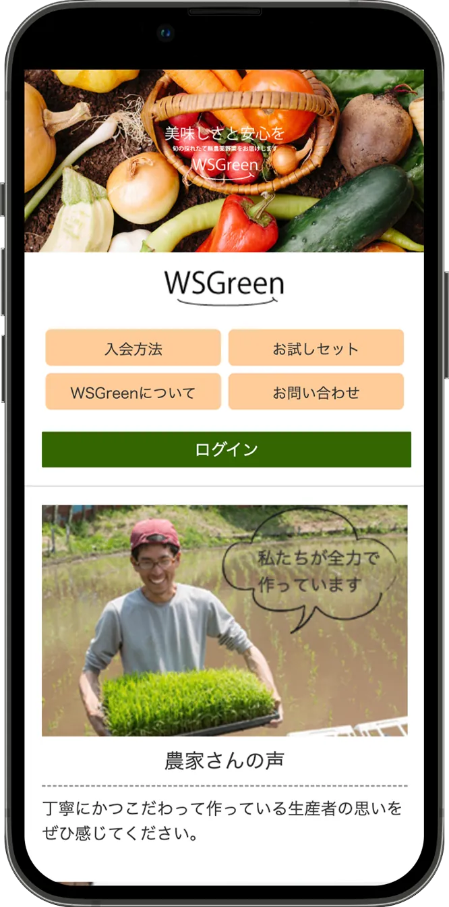
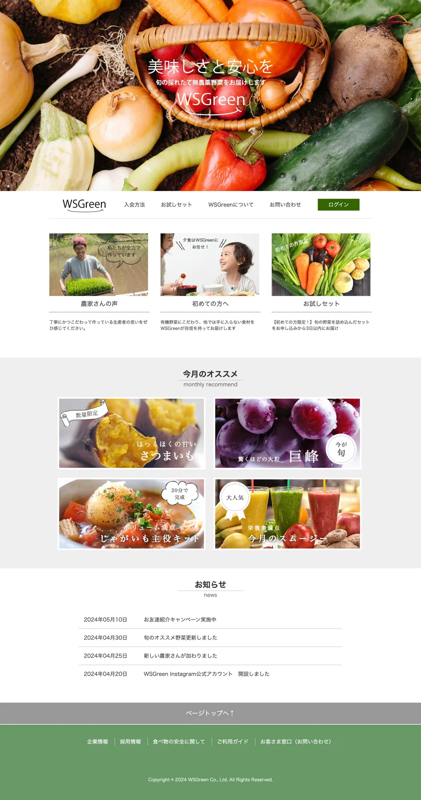
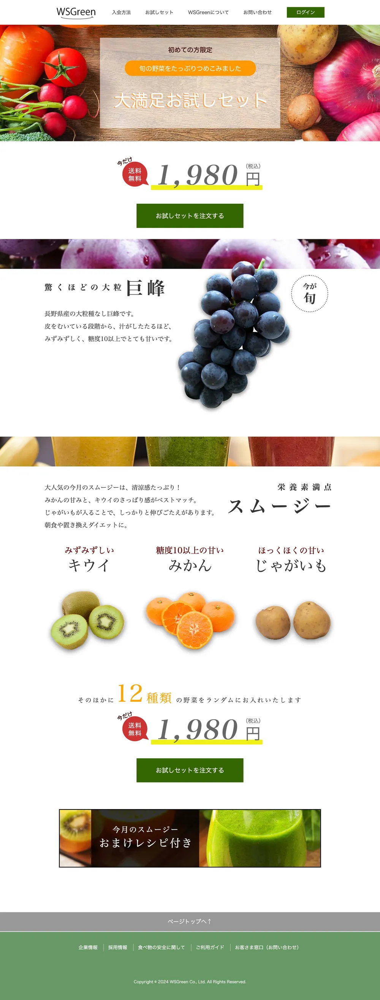
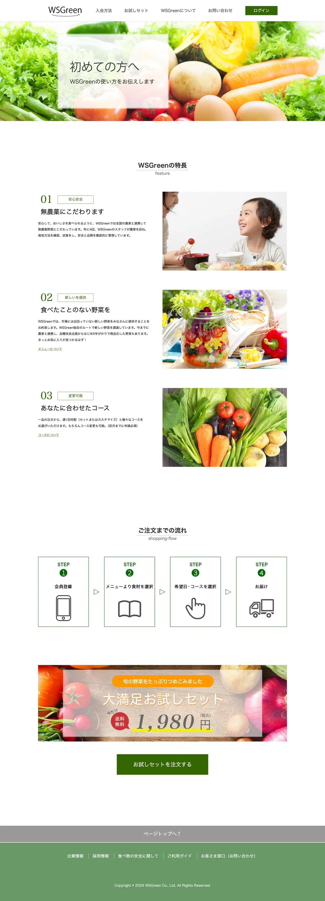

DesignWebサイト TOP
ファーストビューでは採れたての野菜の写真を大きく使い、「美味しさと安心を」というコピーでサービスの価値をまっすぐ伝えています。
- ナビゲーションの中で「ログイン」だけを濃いグリーンのボタンにし、会員の入口を分かりやすく
- 「農家さんの声」「初めての方へ」「お試しセット」の3つのカードで、初めての人を申し込みまで案内
- 「今月のオススメ」は写真にラベルを重ね、季節感と限定感を演出
- SPではメニューを2×2のボタンに組み替え、指でタップしやすく
無農薬野菜の宅配サービス「WSGreen」の、申し込みを増やすことを目的としたサイトの制作課題です。見本デザインをもとにトップページと下層２ページ（お試しセット、初めての方へ）の、画像制作およびHTML・CSSによる実装までを担当しました。

旬の美味しさと安心を、
迷わず申し込める導線で。
ブランドの軸は深いグリーンです。ログインや注文ボタンなど「押してほしい場所」に使い、オレンジ・イエロー・レッドは、価格や送料無料などのお得な情報を目立たせるアクセントに絞っています。


ファーストビューでは採れたての野菜の写真を大きく使い、「美味しさと安心を」というコピーでサービスの価値をまっすぐ伝えています。
トップページと下層ページ2つの、計3ページを制作しました。ヘッダーとフッターは共通にしつつ、下層ページはどちらも最後に「お試しセットを注文する」ボタンを置き、申し込みにつなげています。枠の中はスクロールしてページ全体を見られます。

サービスの入口となる3つのカードの下に、今月のオススメとお知らせを並べました。グレーの背景でセクションを区切り、情報の切り替わりを分かりやすくしています。

価格の「1,980円」を大きく見せ、黄色のマーカーと「送料無料」の吹き出しでお得感を強調しました。巨峰やスムージーの食材紹介をはさみ、注文ボタンをページの上と下の2か所に置いています。

WSGreenの特長を番号付きで3つ紹介し、「ご注文までの流れ」を4ステップのアイコンで図解しました。最後にお試しセットのバナーを置き、読み終えた流れのまま申し込めるようにしています。
サイトの構造や仕組みを学ぶために、AIに頼らず、すべて手作業でコーディングしました。課題の仕様書に沿って、HTMLとCSSで実装しています。
学習を目的に、あえてシンプルな構成にしました。最初の階層にトップページ・WSGreenについて・お試しセットの3つのHTMLファイルを置き、CSSはcssフォルダ、画像はimagesフォルダにまとめています。CSSは、style.css・style_2.css・style_3.cssの3ファイルに分けています。制作当時はディレクトリのルールを十分に理解していなかったため、ファイル名はindex.htmlではなく、yasai.htmlのようにページごとの名前になっています。
yasai/ ├─ yasai.html … トップページ ├─ yasai_hazimete.html … WSGreenについて ├─ yasai_otameshi.html … お試しセット ├─ css/ │ ├─ style.css │ ├─ style_2.css │ └─ style_3.css └─ images/
※ファイル名をクリックすると、GitHubでコードを確認できます。
前回の観光サイトに続き、画像制作から実装までを自力で行ったことで、仕様書のルールを守りながら、効率よく進められるようになりました。
一方で、反省点もあります。スマホ表示のグローバルナビゲーションを、ハンバーガーメニューなどにして隠しておけば、もっとすっきりとしたデザインにできたと感じました。今後はこの反省も活かしながら、目的から逆算して、成果につながるデザインと実装を提案していきたいと考えています。